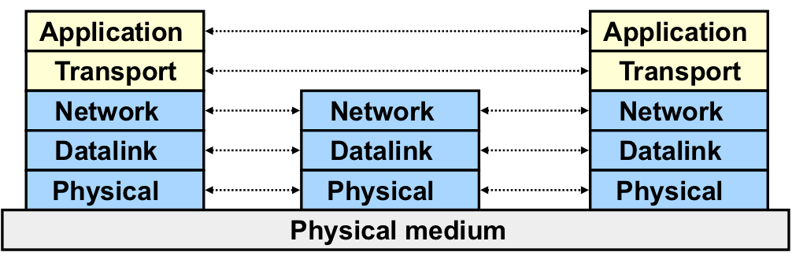

Layered Network Architecture
layering
Introducing an intermediate layer provides a common abstraction for various network technologies.
definition
- a technique to organize a networked system into a succession of logically distinct entities, such that the service provided by one entity is solely based on the service provided by the previous(lower entity).

- Lower three layers are hop-by-hop
- Next two layers are end-to-end
Five layers
Application
supporting network Applications
- FTP, SMTP, HTTP, P2P, IP telephony
Transport
host-host data transfer
Network
routing of datagram from source to destination
Link
data transfer between neighboring network Elements
- Ethernet, 802.11, cable,DSL
Physical
bits "on the wire"
- Cable, optical fiber, wireless
why
Networks are complex
- Hardware
- Hosts
- Routers
- Links of various media
- Software
Effect
- explicit structure allows identification of the relationship among complex system's pieces
- modularization eases maintenance, updating of system. Change of implementation of layer's service transparent to rest of system.
Example
application
- provide services to users
- protocol
- Send messages to peer, for example, helo, mail from, rcpt to are messages between two SMTP peers
transport
- protocol
- Add control info to form "datagram", end datagram to peer, wait for peer to ack receipt;if no ack, retransmit
concepts
- ISO
-
International Standard Organization
- OSI
-
Open System Interconnection
- Service
-
says what a layer does
- Interface
-
says how to access the service
- Protocol
-
says how the service is inplemented
- A set of rules and formats that govern the communications between two peers.
Protocol Layering and Data
Each layer takes data from above
- adds header information to create new data unit
- passes new data unit to layer below
Key design issue: how do you divide functionalities among the layers?
The End-to-End Arguments
The function in question can completely and correctly be implemented only with the knowledge and help of the application standing at the endpoints of the communication systems. Therefore, providing that questioned function as a feature of the communications systems iteself is not possible. —-J.Saltzer, D.Reed, and D.Clark, 1984
- The application knows the requirements best, place functionalities as high in the layer as possible
- Think twice before implementing a functionality at a lower layer, even when you believe it will be useful to an application
Reasons for Implmenting Reliability at Higher Layer
- The lower layer cannot compeltely provide the functionality
- The receiver has to do the check anyway(on reliability cases)
- The lower layer may ack and then crash, then the function fails(crash situations)
- Implementaing it at lower layer increases complexity, cost, and overhead at lower layer
- Shared by all upper layer applications -> everyone pays for it, even if you do not need it
- The upper layer knows the requirements better and thus may choose a better approach to implement it
Reasons for implementing reliablility at lower layer
- Improve performance(e.g. if high cost/delay on a link local reliability)
- imporve efficiency
- reduces delay
- Share common code(e.g. reliability is required by multiple applications)
Summary
- If a higher layer can do it, don’t do it at a lower layer — the higher the layer, the more it knows about the best what it needs
- Add functionality in lower layers iff it
- is used by and improves performance of a large
- number of (current and potential future) applications;
- does not hurt (too much) other applications, and does not increase (too much) complexity/overhead.
- Practical tradeoff
- Allow multiple interfaces at a lower layer (one provides
the function; one does not)
Challenges
Performance VS 1. reuse, interoperability && 2. implementation effort
The Design Philosophy of the DARPA Internet
Questions
- What does the goal mean?
- Why is the goal important?
- How does the Internet achieve this goal?
- Does the Internet achieve this goal (or in what degree does the Internet achieve this goal)?
Goals
Connect different networks
Most Important.
Survivability in the face of failure
- Continue to operate even in the presence of network failures(e.g. link and router failures)
- Decision:maintain state only at end-points(fate-sharing)
- Eliminate the problem of handling state inconsistency and perform state restoration when router fails
- Internet:stateless network architecture
Support multiple types of services
- Add UDP to TCP to better support other types of applications
- e.g. real-time applications
- This was arguably the main reason for separating TCP and IP
- Provide datagram abstraction:lower common denominator on which other services can be built:everything over IP
- Service differentiation was considered(remember ToS?), but this has never happened on the large scale(Why?)
Support a variety of networks
- Very successful
- Because the minimalist service;it requires from underlying network only to deliver a packet with a "reasonable" probability of success
- ...does not require:
- Reliability
- In-order delivery
- The mantra: IP over everything
- Then: ARPANET, X.25, DARPA satellite network...
- Now: ATM, SONET, WDM...
Other goals
Be cost effective
Permit host attachment with a low level of effort
Be accountable